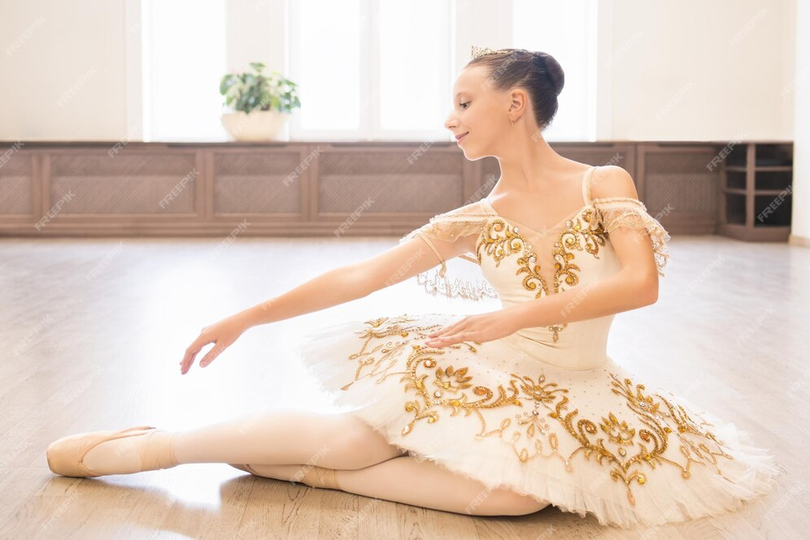

Ballet romantico
El Ballet Romántico surgió a principios del siglo XIX en Europa como una respuesta a la revolución industrial y el racionalismo que predominaban en la época. Este estilo de ballet se caracterizó por una fuerte carga emocional y un énfasis en los sentimientos y las emociones. El Ballet Romántico se enfocó en la creación de historias románticas y sentimentales, que eran presentadas a través de la danza y el movimiento. Los ballets de esta época a menudo se centraban en temas como el amor trágico, la muerte, la fantasía y el misterio.
$1500